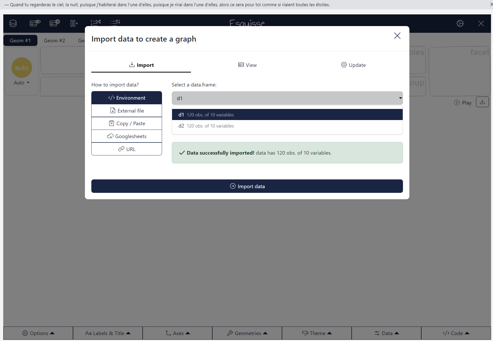
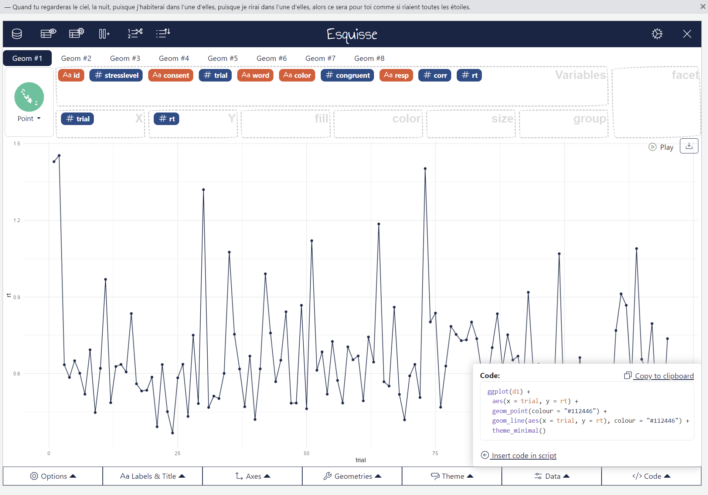

library(tidyverse)
numbers <- c(43, 65, 23, 78, 34, 73, 69, 14, 37, 84)Übung 1
Lernziele dieser Übung
Nach der heutigen Übung können Sie
- R und RStudio installieren
- Benutzeroberfläche und Einstellungen in RStudio anpassen
- RProjekte erstellen
- Code in RNotebooks und RSkripte schreiben und ausführen
- Mathematische Operatoren verwenden
- Funktionen mit den passenden Argumenten verwenden
- Variablen verschiedener Typen erstellen und abrufen
- Datensätze einlesen und anschauen
- Daten visualisieren
- Hilfe fürs Debugging finden
Übungen ohne RStudio
Falls bei der Installation unlösbare Probleme auftauchen, können Sie R und RStudio in der R Sprechstunde nächste Woche installieren. Lösen Sie die Aufgaben ab Aufgabe 1.4 mit WebR hier und holen Sie Aufgabe 1.1-1.3 vor der nächsten Übung nach.
Aufgabe 1.1. Installation von R und RStudio
Installieren Sie R und RStudio, wie in 1 Installation beschrieben.
Aufgabe 1.2 Packages installieren
Installieren Sie das Package {tidyverse} entweder über die Konsole oder über Tools.
Aufgabe 1.3: RProject und RSkript erstellen
Erstellen Sie (an einem für Sie geeigneten Ort auf Ihrem Rechner) einen Ordner für alle Übungen in Statistik 2 mit dem Namen
Statistik2.Öffnen Sie RStudio und erstellen Sie in diesem Ordner ein RProject mit dem Namen
introduction_to_r.Erstellen Sie in RStudio ein RSkript (Endung
.R).Speichern Sie dieses Skript im RProjekt-Ordner mit dem Namen
introskriptab.Erstellen Sie im aktuellen RProjekt-Ordner einen Unterordner namens
data. Laden Sie dann die Datensätze herunter und speichern Sie diese imdata-Ordner.
Aufgabe 1.4: Operatoren und Funktionen verwenden
- Schreiben Sie in das Skript untenstehenden Code und führen Sie diesen aus.
Wie können Sie nun nachschauen, welche Werte in der Variable vorhanden sind?
Berechnen Sie folgende Werte:
Mittelwert der Variable
numbers.Standardabweichung der Variable
numbers.Summe der Variable
numbersWas passiert, wenn Sie die Variable
numbersmit sich selber addieren (numbers + numbers) oder multiplizieren?Was passiert, wenn Sie die Wurzel nehmen?
Erstellen Sie eine Variable
wordsmit den Wörternyellow,greenundreddarin.Was passiert, wenn Sie den Mittelwert der Variable
wordsberechnen?Welcher Wert wird ausgegeben?
Gibt es eine Warnung oder eine Fehlermeldung?
Was passiert, wenn Sie die Variable
wordsmit sich selber addieren?Welcher Wert wird ausgegeben?
Gibt es eine Warnung oder eine Fehlermeldung?
Diskutieren Sie kurz zusammen: Wie unterscheiden sich Warnungen von Fehlermeldungen?
Aufgabe 1.5: RNotebook erstellen und Packages laden
Erstellen Sie ein RNotebook und speichern Sie es unter dem Namen
intronotebookab.Identifizieren Sie die 3 Bausteine eines Notebooks: Header, Textfeld und Codefeld mit folgenden Fragen:
- Woran erkennt man den Baustein?
- Für was eignet sich der Baustein besonders und für was nicht?
Geben Sie dem Notebook einen Titel.
Laden Sie in einem Codefeld das Package
{tidyverse}mit
library(tidyverse)- Beschreiben Sie im Textfeld über dem Codefeld was der Code machen sollte.
Aufgabe 1.6: Daten einlesen
In dieser Aufgabe arbeiten wir weiter mit dem RNotebook von oben.
Erstellen Sie ein neues Codefeld.
Lesen Sie den Datensatz
stroop_data_sub-001.csvaus demdata-Ordner ein. Gehen Sie dabei schrittweise vor:Welche Endungen hat die Datei?
Importieren Sie die Daten mit dem GUI.
Löschen Sie die Variable aus dem Environment.
Importieren Sie den Datensatz mit Code. Verwenden Sie dafür den Variablennamen
d1für den Datensatz (bzw.d2für den zweiten Datensatz).
d1 <- ...("data/...")Führen Sie dieselben Schritte für stroop_data_sub-001.xlsx aus. Denken Sie daran, dass die Einlesefunktion für .xlsx-Dateien aus dem Package {readxl} stammt und sie dieses zuerst laden müssen.
d2 <- ...Diskutieren Sie kurz zusammen:
- Was war schwierig? Was fällt Ihnen auf?
- Was sind Separators?
- Welcher Weg fällt Ihnen leichter?
Aufgabe 1.7: Datensätze anschauen
Schauen Sie sich die beiden Datensätze auf vier Arten an:
indem Sie im
Environmentmit dem Pfeil den Datensatz aufklappen.indem Sie im
Environmentauf den Namen doppelklicken.indem Sie den Namen der Variable eingeben (in der Konsole oder im RNotebook).
indem Sie untenstehenden Code eingeben (
...muss mit einer Variable ersetzt werden):
glimpse(...)Aufgabe 1.8: Visualisieren der Datensätze
- Installieren Sie das Package {esquisse}. Verwenden Sie hierzu entweder den Reiter
Tools>Install Packages...oder ergänzen Sie den untenstehenden Code.
# Ergänzen Sie diesen Code und schreiben Sie ihn in die Konsole und NICHT ins RNotebook.
__("esquisse")Wieso sollte das Package nicht im RNotebook installiert werden?
- Geben Sie in der Konsole folgenden Code ein:
esquisse::esquisser()

Equisser
Schauen Sie sich nacheinander die beiden Datensätze an.
Welche Variablen gibt es und welches Skalenniveau haben diese?
Ist die Variable
rtnormalverteilt?Welche Darstellungsform eignet sich am besten?
Lassen Sie sich für die beste Darstellung des Datensatzes einen Code ausgeben.
Speichern Sie Ihr RNotebook ab. Speichern Sie alle Änderungen in Ihrem RNotebook. Der Titel sollte nicht mehr in rot geschrieben sein und keinen Stern nach dem Namen haben.

Equisser
Schliessen Sie Ihr RProject und öffnen Sie es erneut.
Falls nötig: Öffnen Sie ihr
intronotebook.Rmd-File wieder. Dies können Sie unterFile>Open Filetun oder im rechten unteren Quadranten unterFiles.Führen Sie Ihren Code mit
Run allaus. Jetzt sollten Sie zum Schluss eine Grafik angezeigt erhalten.Zeigen Sie einander die Grafiken und diskutieren Vor- und Nachteile der Darstellungsformen.
Bei Problemen…
Der Einstieg ins Programmieren mit R ist nicht einfach. Falls Sie Fragen zu den Übungen haben, dürfen Sie diese zusätzlich in der R Sprechstunde nächste Woche stellen. Kommen Sie einfach mit Ihrem Computer vorbei und wir schauen es an.